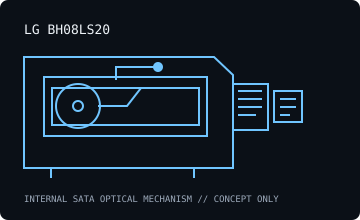

[ INDIVIDUAL COMPONENT // OPTICAL DRIVES ]
LG BH08LS20
Internal SATA Blu-ray rewriter rated for BD-R recording up to 8×, with legacy DVD/CD writing and LightScribe support. Specifications are model-specific; maximum ratings depend on media, firmware and recording mode.

IDENTIFICATION: LG BH08LS20 · match the full model suffix and OEM label to the cited documentation before assigning capabilities.
Documented specifications
| Catalog subcategory | Blu-ray drives |
|---|---|
| Exact model | LG BH08LS20 |
| Drive type | Internal 8× Super Multi Blue Blu-ray Disc rewriter |
| Supported media and read/write formats | Reads BD-ROM, BD-R/RE, DVD-ROM and CD-ROM; writes BD-R up to 8× and BD-RE up to 2×, plus DVD±R up to 16×, DVD-RAM up to 12× and CD-R up to 40×. Check the exact media matrix in the model manual for additional DVD/CD variants. |
| Rated maximum speeds | BD-R 8×; BD-RE 2×; BD-ROM read up to 8×; DVD±R write up to 16×; DVD-RAM write up to 12×; CD-R write up to 40×. |
| Interface and mechanical fit | Internal Serial ATA (SATA), 5.25-inch half-height desktop mechanism. Confirm connector, front bezel, mounting screw positions, clearance and supply before installation; do not treat this summary as a dimensional drawing. |
| Host compatibility | Internal 5.25-inch half-height SATA host with a matching data/power connection; install on a PC host whose BIOS/OS enumerates an ATAPI/SATA optical device. Blu-ray playback or burning also needs compatible application/software and media. Original software/OS support in old manuals is not a guarantee for a modern OS. LightScribe requires suitable media and software. |
| Model-specific qualification | BH08LS20 is the exact model identifier; do not transfer ratings from similarly named BH08LS30/BH10LS30 drives or assume support for BDXL/UHD media. |
Host setup and preservation notes
- Verify the exact drive label, firmware, SATA data/power connection and optical-device enumeration before testing media. Old vendor OS lists describe tested software at release, not a modern support guarantee.
- Read support is not write support. Use media bearing a format the exact drive/firmware supports; distinguish BD-ROM, BD-R and BD-RE, and do not infer BDXL/UHD capability from the Blu-ray logo alone.
- For preservation reads or recordings, log drive model/firmware, host controller, OS/software, media type, checksums and read/verification errors. Keep original discs unmodified and store them in protective cases in a clean, cool, dry location.
Manufacturer, standards and preservation sources
- LG — BH08LS20 support and documentationManufacturer support locator for the exact BH08LS20 product and available documentation.
- LG BH08LS20 owner manualModel manual for media support, operating conditions and installation; use the exact revision.
- Blu-ray Disc Association — format specificationsDisc-format reference; it does not certify any individual drive.
- NIST — care and handling of optical discsPreservation and handling guidance; retain verified copies and logs.
Vendor speed ratings are maxima under specified media and modes, not guaranteed sustained rates or a warranty that aged media remains readable.